生产设置窗口1020×772，原始JPEG为2040×1544。中文浅深色六入口及英文深色页头逐张检查。标题、开关和设备卡片保持同行；连接位于回眸之前。内部独立副本与交付包使用相同产品源码，内部副本只改身份并使用隔离数据，不可交付。
三张连接卡片来自现有截图fixture，不代表实机连接。横向滚动自动操作未观察到位置改变，不能标为通过。选择Siri卡片后画布正确，但fixture连接状态丢失，因此该截图只证明选择与空状态布局。真实四设备与触控板横滚待用户重测。动态切换语言未验收。
格式、尺寸及SHA-256见原图清单。
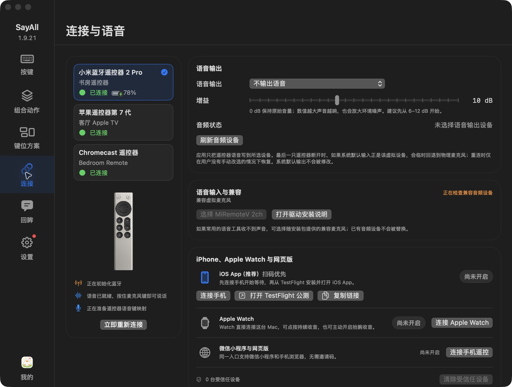
c26d1e76967fad2bb3a61bb4cb8c2729eeb1e2680d3d9abd2b990f88c1410b4c
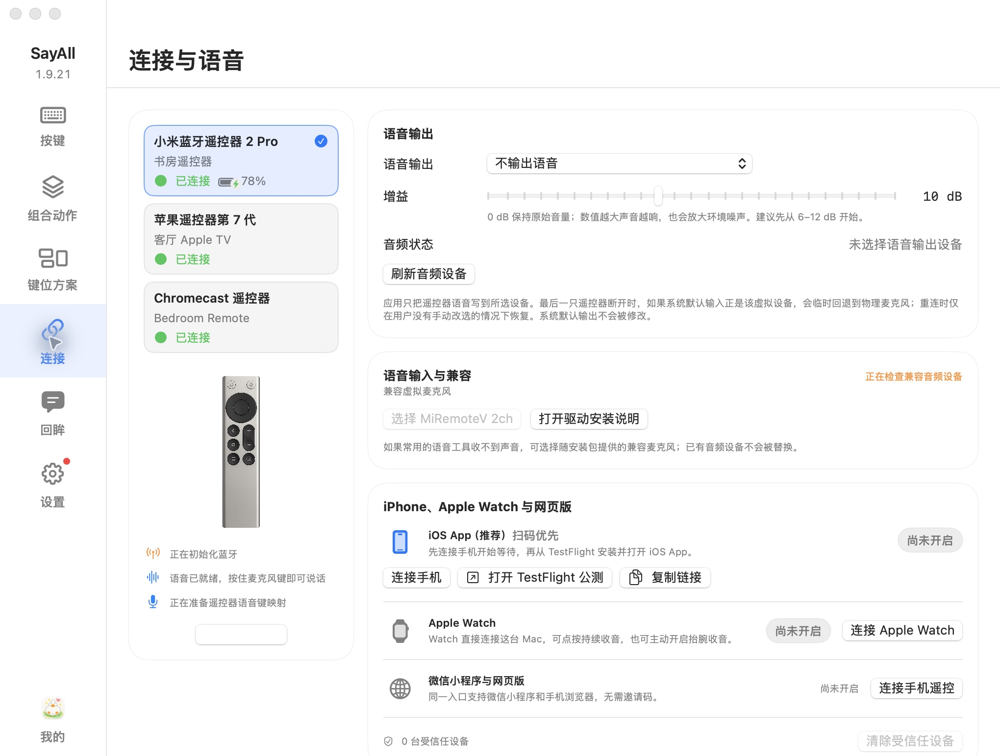
0bc4b0b22f51942df66c188e2ac184fa1d419a22ec0b3a4ef18d050181340b0e
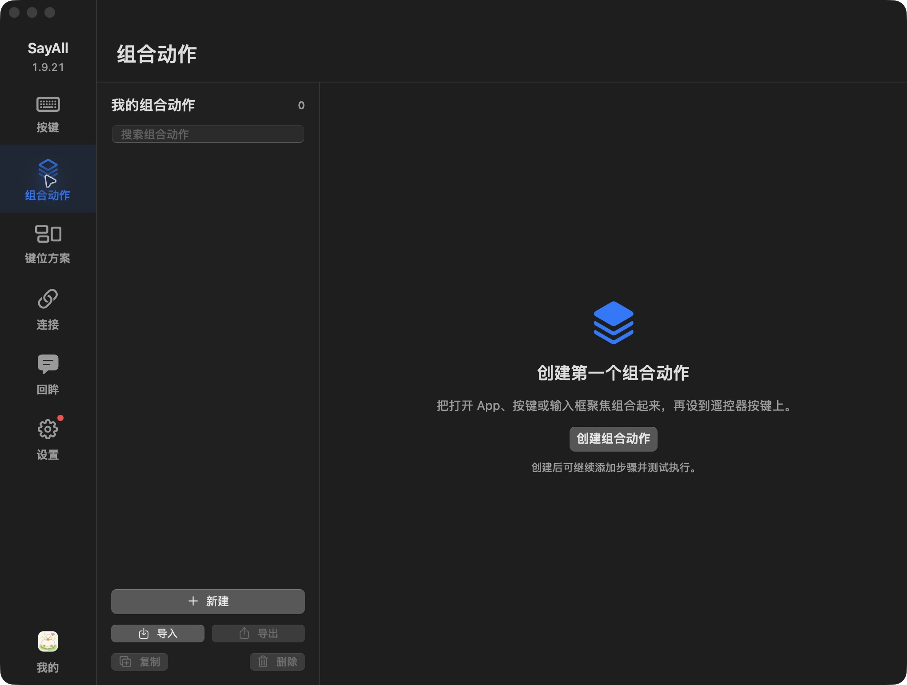
3ca1de7ad02e7c8dd808990542d5e143366ef0decc6a5ac2a12570576a8dc162
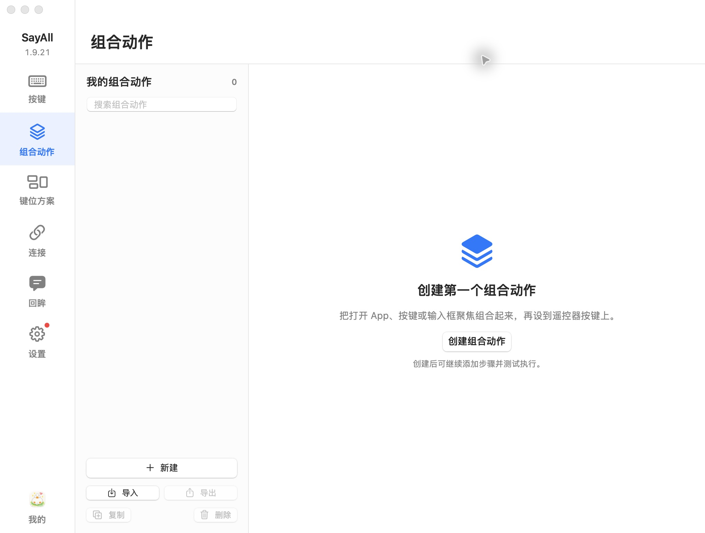
233e29fa3326bf378f28672ec4a82905bcd48053a9d055482a5e704927864730
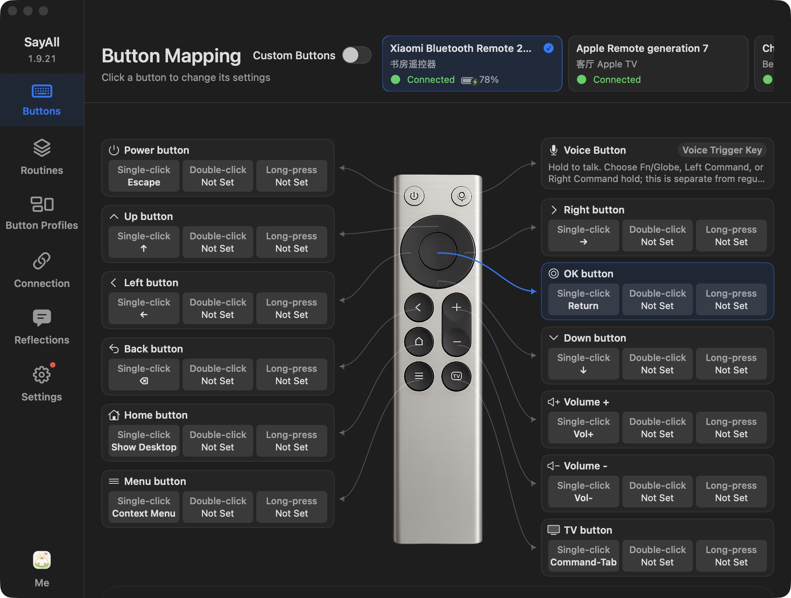
0ef5c1b4767eef9b737dd640e609fcd0901a57ac4ff781ada04dc0aac97fa254
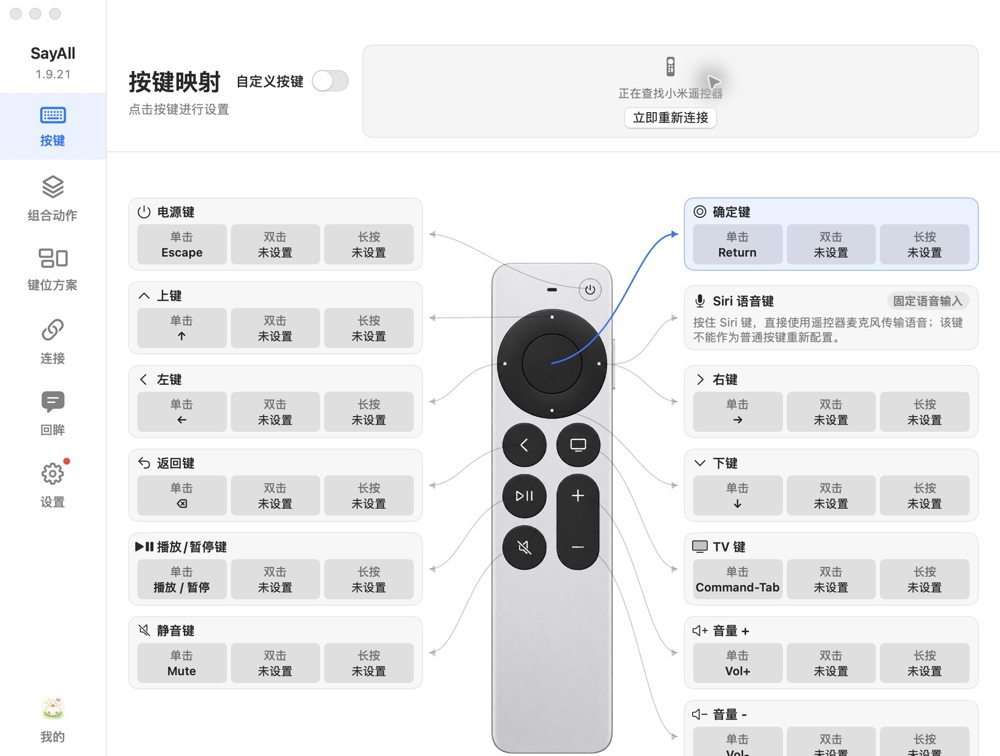
ac33ac3275555813d6264b2dd00028524d76188fa8be0d2c6fefcf1b09cd94af
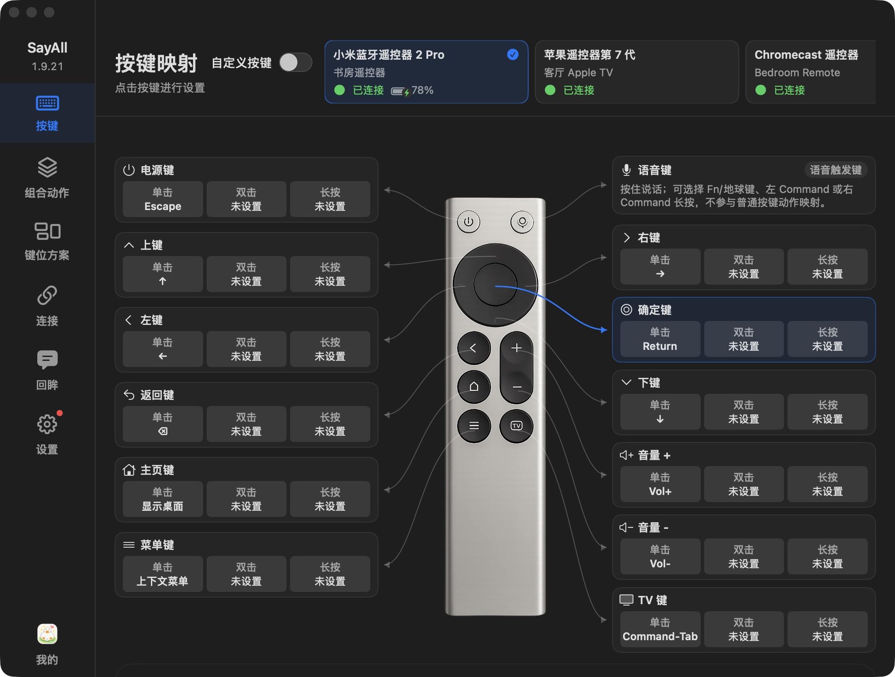
1761df74e6b9a3fa87e28e64a344163c2d5eda1e4f6400fc8a975ac1430d4306
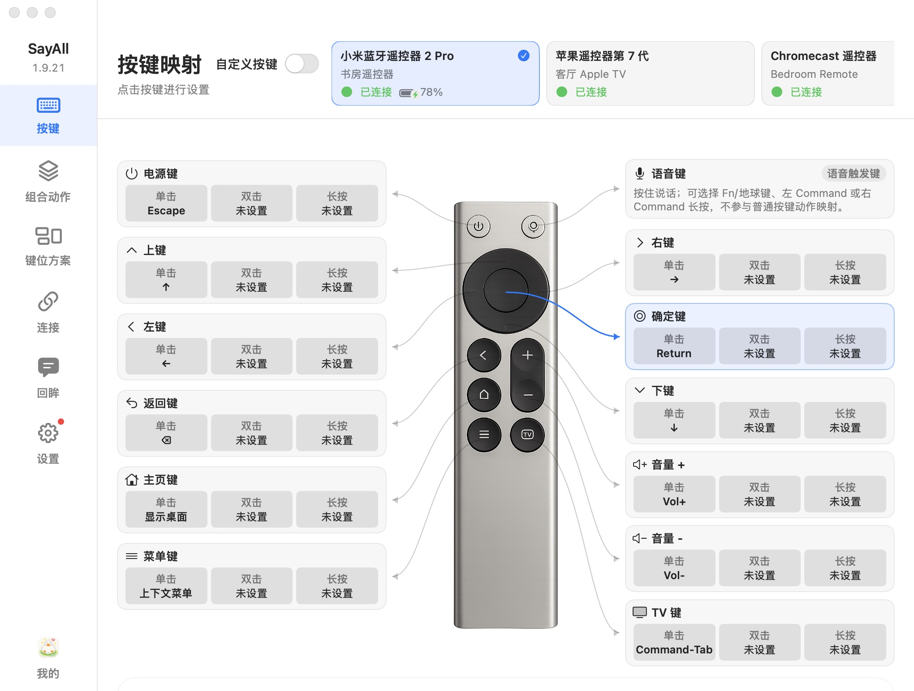
264d14b64c4c007c5c898528a6a0b1312238bb914a57438e2c7825bbef6fb427
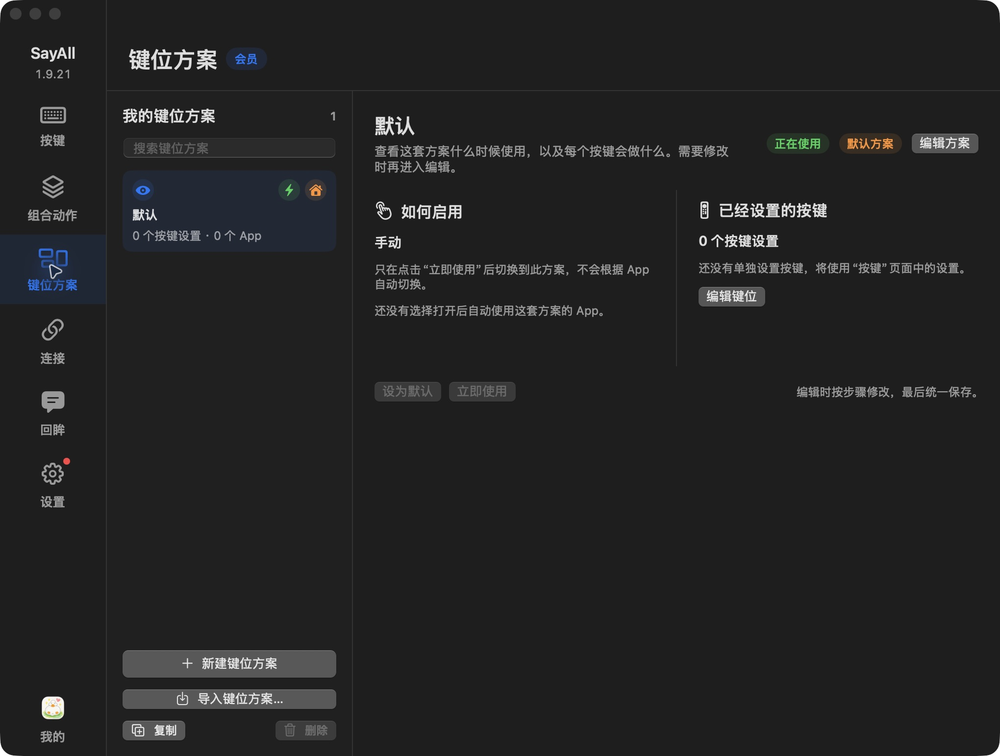
1f5922393f455ac99810b1512b44783da2ffea36be0711e42c17dc02a2b0a32d
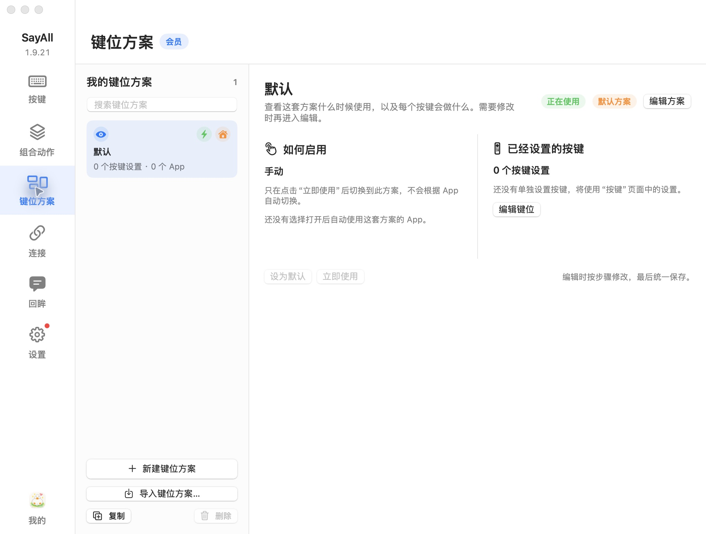
aa5a9eefa36850cc53c69f600b6f0ce4c4e9c52f1dd74954a08a003f00901ccc
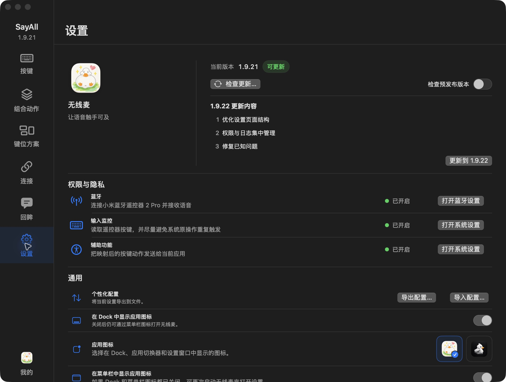
a70fc0d9ba9dbfa75f7bd6bc4ffb36ef2450481248f3d72cdc8e1819b91ced36
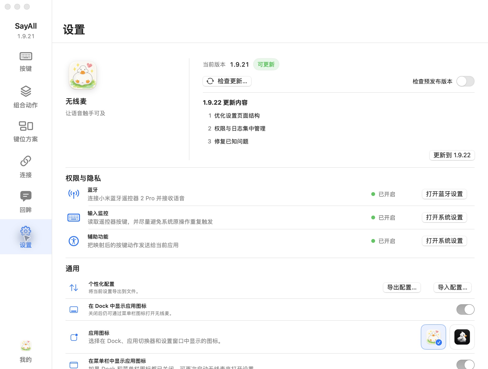
49e1bc1ad17e2fbdf0de24368c9d60068c4f991a3e9f1595968ec3b2c13deaa7
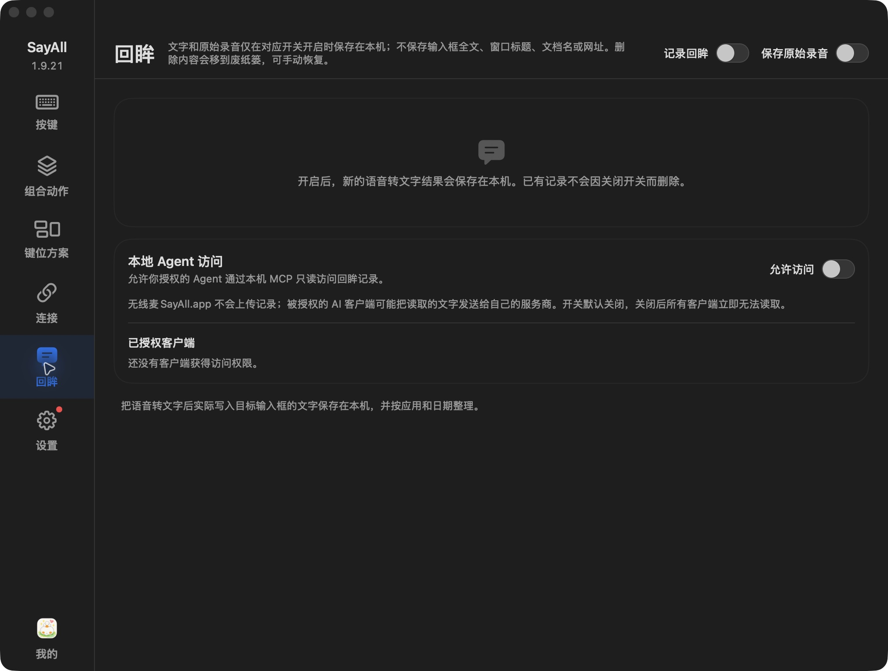
0d133a38d16542226dd5fc7081aa597f186b3b4f96bd27fb6cbd5ec6f23a920b
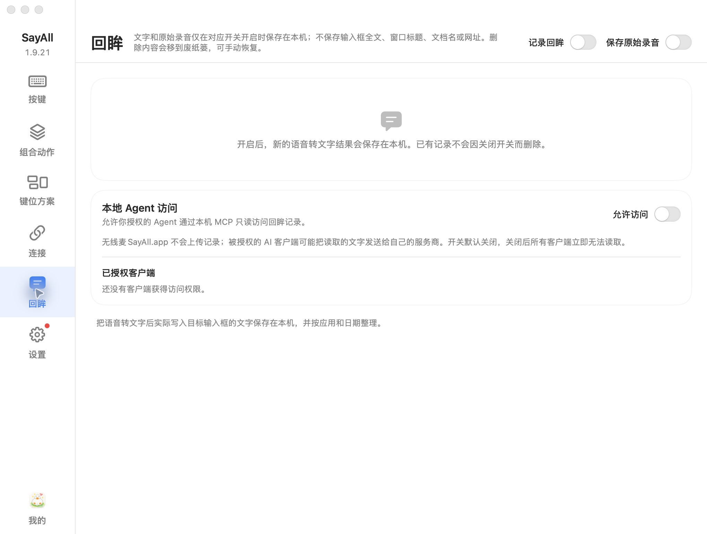
89d6849abb178c1c5db31cc99fe7154d79fe7c0130ba77896acd8a7f519f6c3a